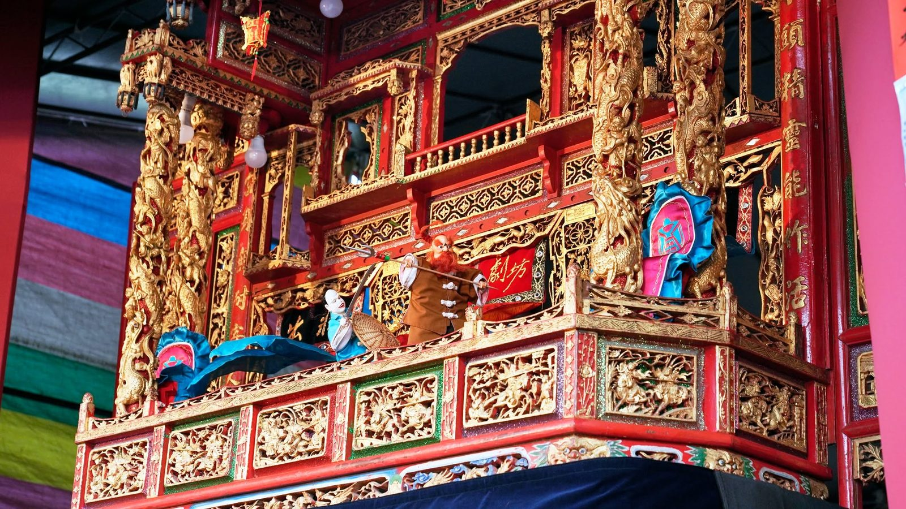

Traditional Glove Puppetry · 傳統布袋戲
《掠賊賠千金（金魁星）》
About the work
作品介紹
相傳蘇州吳江縣一名秀才與相府千金因陰錯陽差牽起一段錯配姻緣。故事裡沒有真正的壞人，而是以鮮明的小人物性格、誤會與機智一步步推動情節；最後由馮雄與妻子設下巧計，使王贊得以平反。
演出以全臺語口白為主，對白穿插臺語諺語、俚語與詩詞，在熱鬧詼諧的掌中戲節奏裡，保留語言的音韻趣味與傳統布袋戲的人物性格。
Production stills
演出劇照
2024 新北市巷弄藝起來巡演・三峽祖師廟。
